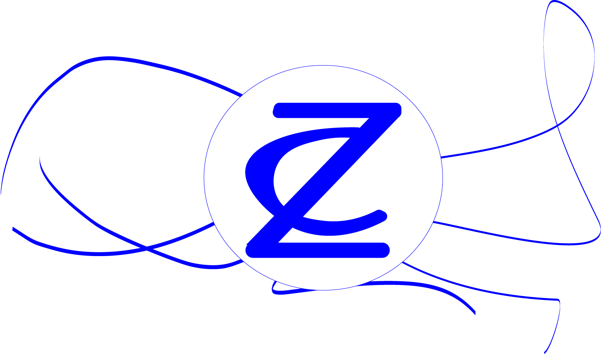
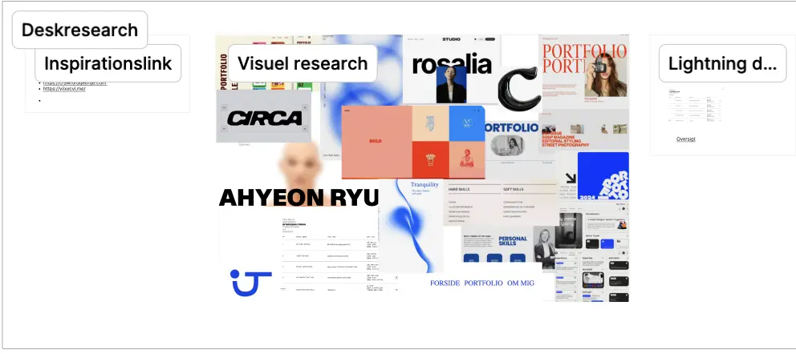
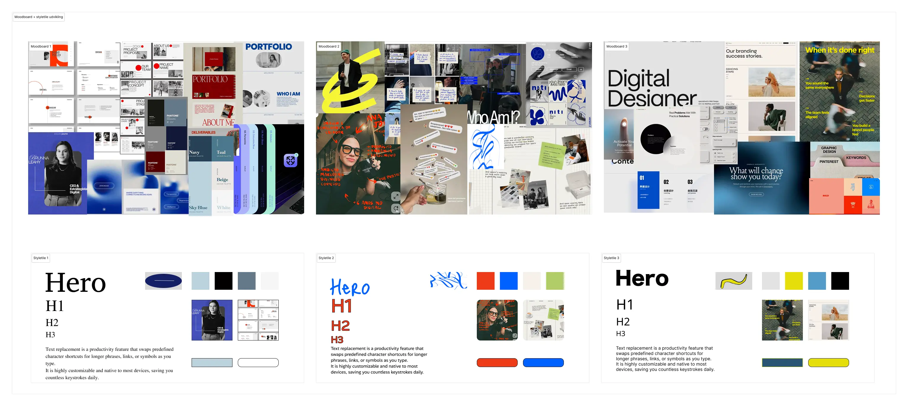

Projekter
Portfolioeksamen
Produkt
Dette portfoliosite der skal dokumentere projekter og læring fra 1. semester
Gå til forsidenProces
Fokus på processtruktur for at være sikker på at nå alt inden deadline, brug af kanbanboard i Figma til løbende procesoverblik
Research og analyser af andre portfoliosite, samtaler med studerende på årgange over mig.
Stort fokus på at udvikle styletiles ud fra værdiord for at ramme de ting jeg helst vil udtrykke, så portfoliet føles som mit eget udtryk
Reflektion
Jeg har gennem de andre temaer lært mig selv at kende rigtigt godt ift hvor i processen jeg er udfordret på at finde motivation og hvor jeg skal fastholde mig selv.
Jeg har forsøgt at udfordre mig selv ved at sætte nogle krav til
nogle af de ting jeg havde svært ved i de andre temaer.
Jeg har derfor implementeret infografik og derved kodet en SVG-fil igen. Derudover fokuserede jeg på at jeg skulle kreere nogle elementer i Illustrator og undgå AI-løsninger
til grafik.
Jeg går fra første semester med en fyldt værktøjskasse som jeg har lyst til at bruge mere hyppigt, for ikke at miste egenskaberne.


